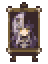
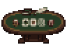
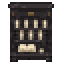
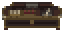

HOLOCRAWL · 시오리 실내 장식196
시오리 · 카드 오브 그리드
기존 카드룸에 시오리의 흑백 머리·금빛 눈을 담은 초상 진열대와 금서 독서대를 넣었습니다. 뒤쪽 벽과 금고의 금빛 눈 모양 잠금장식, 흑백 의자도 함께 볼 수 있습니다. 중앙 테이블과 기존 방 구조는 유지했습니다.
도트 준비 중…
기존 벽에 붙인 배치독립 배치 · 사방 통로
카드 테이블은3×2칸, 책장은각2×2칸입니다. 입구는2칸 양개문이며, 그림을 누르면2배 정수 배율로 확대됩니다.
시오리 초상과 기존 도트 확대
시오리 · 초상 진열대
카드 테이블
흑백 장서·깃펜
칩·기록 교환대
원작 자료와 재구성 범위
원작 시설 목록에서 시오리 및 하이앤로 카드게임과의 연결을 확인했습니다. 건물과 실내 평면은 홀로크롤용 재구성입니다. 원작 외형의 정확한 복제는 아닙니다. 시오리 초상은공식 캐릭터 그림을 참고한 신규 도트이며, 실내 장식은 우리 게임용 재구성입니다.
시설 미술·배치 검토본입니다. 적·보상·카드게임 기능은 이후 단계입니다. 배치 검사 · 도트 목록